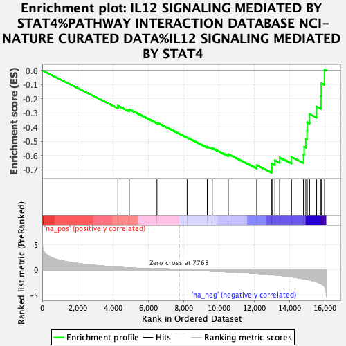
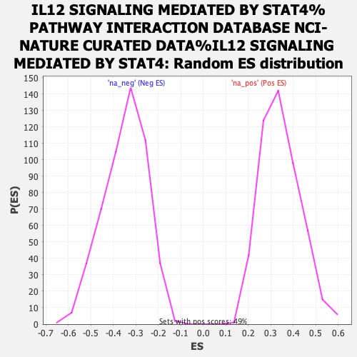

| | | Dataset | rankings |
| Phenotype | NoPhenotypeAvailable |
| Upregulated in class | na_neg |
| GeneSet | IL12 SIGNALING MEDIATED BY STAT4%PATHWAY INTERACTION DATABASE NCI-NATURE CURATED DATA%IL12 SIGNALING MEDIATED BY STAT4 |
| Enrichment Score (ES) | -0.72133875 |
| Normalized Enrichment Score (NES) | -2.077026 |
| Nominal p-value | 0.0 |
| FDR q-value | 0.0026489352 |
| FWER p-Value | 0.067 |
Table: GSEA Results Summary

Fig 1: Enrichment plot: IL12 SIGNALING MEDIATED BY STAT4%PATHWAY INTERACTION DATABASE NCI-NATURE CURATED DATA%IL12 SIGNALING MEDIATED BY STAT4
Profile of the Running ES Score & Positions of GeneSet Members on the Rank Ordered List
| PROBE | GENE SYMBOL | GENE_TITLE | RANK IN GENE LIST | RANK METRIC SCORE | RUNNING ES | CORE ENRICHMENT | | 1 | MAPK8 | | | 4282 | 0.542 | -0.2492 | No |
| 2 | IL18 | | | 4927 | 0.406 | -0.2761 | No |
| 3 | MAPK9 | | | 6492 | 0.146 | -0.3688 | No |
| 4 | PIAS2 | | | 8199 | -0.047 | -0.4736 | No |
| 5 | STAT3 | | | 9337 | -0.195 | -0.5381 | No |
| 6 | HLA-DRA | | | 9622 | -0.244 | -0.5478 | No |
| 7 | IL18R1 | | | 10528 | -0.392 | -0.5915 | No |
| 8 | CD28 | | | 12138 | -0.730 | -0.6680 | No |
| 9 | CD3E | | | 12995 | -0.981 | -0.6895 | Yes |
| 10 | CD4 | | | 12999 | -0.982 | -0.6578 | Yes |
| 11 | TGFB1 | | | 13166 | -1.042 | -0.6343 | Yes |
| 12 | ETV5 | | | 13433 | -1.130 | -0.6141 | Yes |
| 13 | CD86 | | | 14106 | -1.405 | -0.6103 | Yes |
| 14 | CD3D | | | 14784 | -1.778 | -0.5947 | Yes |
| 15 | CREBBP | | | 14823 | -1.795 | -0.5388 | Yes |
| 16 | PRF1 | | | 14916 | -1.849 | -0.4844 | Yes |
| 17 | JUN | | | 14981 | -1.889 | -0.4270 | Yes |
| 18 | HLA-DRB1 | | | 14993 | -1.898 | -0.3660 | Yes |
| 19 | CD247 | | | 15129 | -2.005 | -0.3093 | Yes |
| 20 | FOS | | | 15527 | -2.416 | -0.2555 | Yes |
| 21 | STAT4 | | | 15774 | -2.776 | -0.1807 | Yes |
| 22 | IRF1 | | | 15787 | -2.800 | -0.0904 | Yes |
| 23 | IL18RAP | | | 15977 | -3.328 | 0.0059 | Yes |
Table: GSEA details [plain text format]

Fig 2: IL12 SIGNALING MEDIATED BY STAT4%PATHWAY INTERACTION DATABASE NCI-NATURE CURATED DATA%IL12 SIGNALING MEDIATED BY STAT4: Random ES distribution
Gene set null distribution of ES for IL12 SIGNALING MEDIATED BY STAT4%PATHWAY INTERACTION DATABASE NCI-NATURE CURATED DATA%IL12 SIGNALING MEDIATED BY STAT4